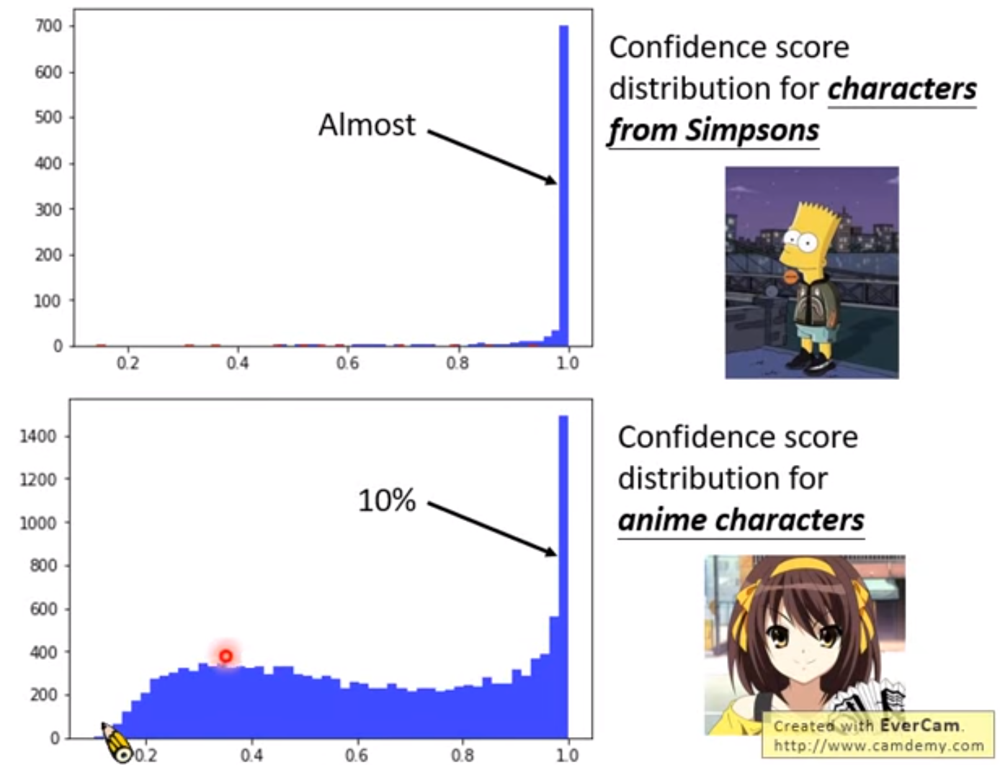
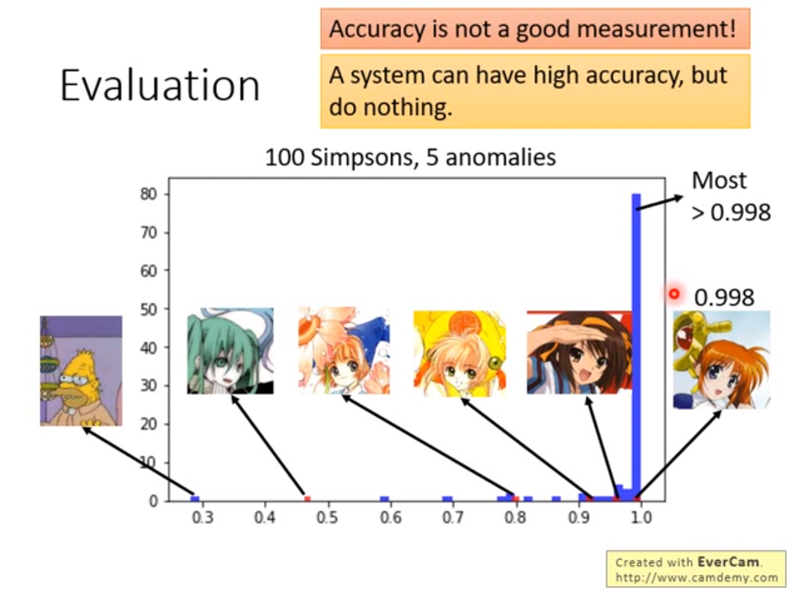
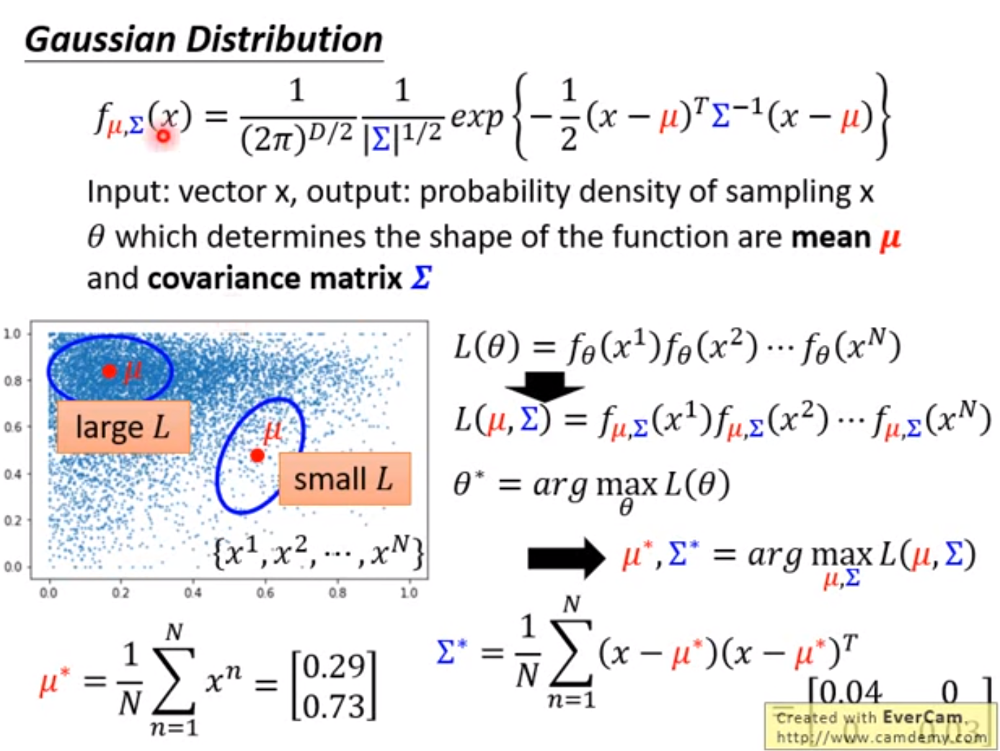

到了期待已久的异常检测部分，学点新知识
什么是异常检测
Anomaly Detection：让机器知道自己不知道
Anomaly并不是错误，只是样本不属于原有模型可以识别进行分类的数据
异常检测问题的分类categories：
- 训练数据带有标签：classifier
- 无标签数据
- 所有的数据全部为正常数据
- 部分数据被污染，包含异常数据（银行的交易记录）
带标签数据的检测
一种简单的方法
从一个分类器入手，假设现在有一个训练好的classifier，会为每一个输入的图片输出属于各种类别的概率。
现在设定一个额外的数值，称为confidence信心，confidence的计算方法可以人为设定，最简单的方法是选取各类别预估概率中的最大值。
如果信心值小于阈值$\lambda$，则认为输入的样本属于异常值。信心值过小，可以认为是分类器对与估计的把握很小，或者理解为出现了它无法识别的东西，也就是分类意义上的异常类别。
这种方法很简单，但是目前是很有效的方法之一

上图是一个“辛普森家族分类器”面对两种数据（正常与异常数据，异常为辛普森家族之外的动漫图片）时的分类信心值，可以看到面对正常数据的时候，大部分的信心值的结果都接近1，而对于异常数据（凉宫春日）的时候，大部分的信心值相对较低。也就是信心值对于正常、异常数据的分布有比较明显的区别。
示例框架
Training Set：全部数据来自于辛普森家族的图片，并得到了良好的标注
Dev Set： 图片有一些不是来自辛普森家族，得到了良好的标注，用于调整超参数$\lambda$
Test Set: 测试用例

红色的点是异常值，发现也有存在部分信心值很高的异常数据，但总的来说大部分正常数据的信心值都非常高。
如果只使用accuracy来衡量结果，对于异常检测来说很不合理，因为绝大多数数据都是正常的，系统会趋向于直接把所有数据变成正常！
这边就又要用precision+recall来判断了，具体问题precision和recall的重要度并不同，比如癌症判断的时候人们对于召回率更看重。
一些模型可以直接学习出confidence。
使用GAN去生成异常数据，来弥补异常数据不够的问题。
无标签数据的检测
检测示例：宝可梦在线游戏中检测游戏小白
- 从输入中提取向量数据
- 没有标签数据
最大似然函数
假设所有的数据点都是一个概率密度函数$f_\theta(x)$
Likelihood
一种常用的模型：高斯分布

高斯分布由均值（vector）和相关矩阵（matrix）决定
为什么用高斯分布？：常用，效果很好，有时候看起来根本不是高斯的分布，可以更深入的寻找function
Outlook
Auto-Encoder 训练输入与输出越像越好。测试的时候，如果还原回来的图片和原图片很像，那么可以认为是异常图片
One-class SVM
Isolated Forest 周志华